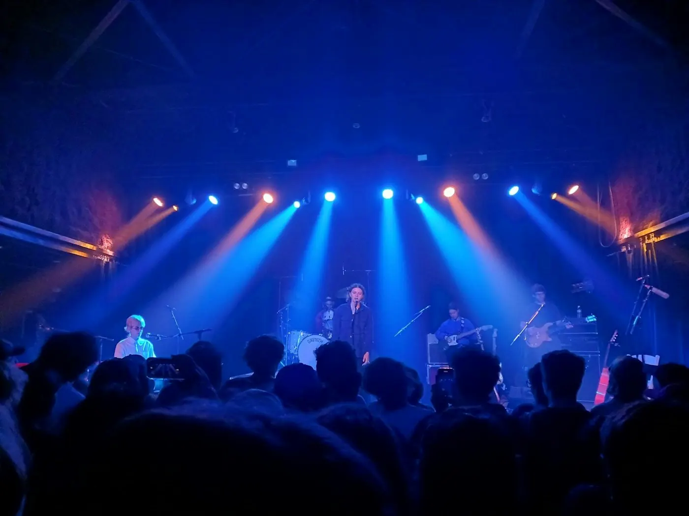
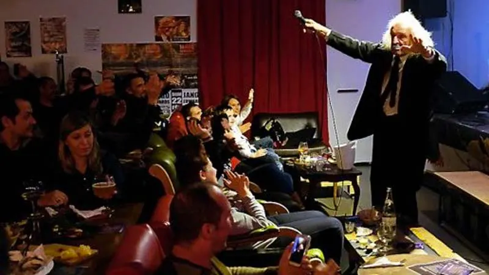
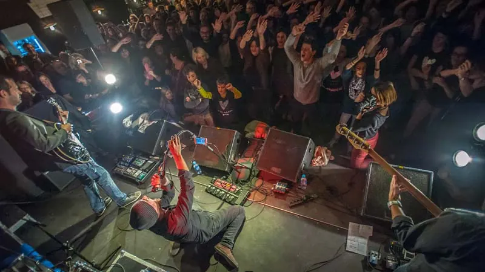
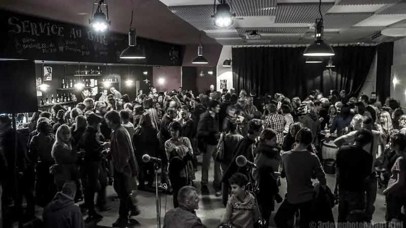
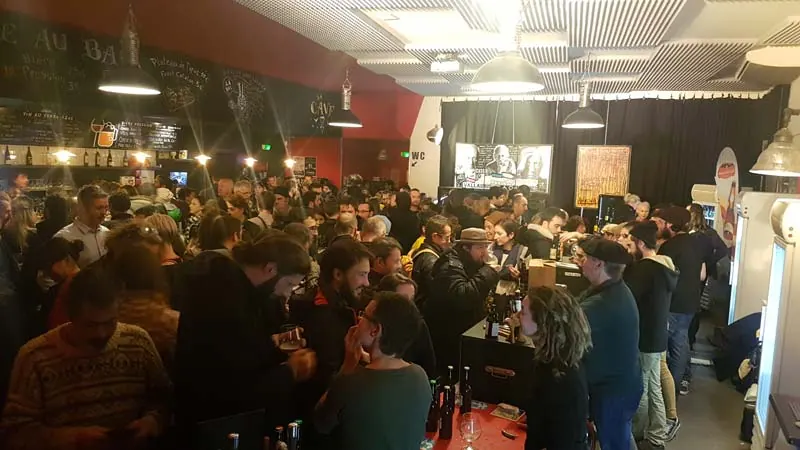

À la une · La programmation
La scène de Vinochope
Concerts, apéros-concerts, expositions, danse et dégustations : la programmation change chaque trimestre.

L'agenda
Tout le programme.
Chargement de la programmation…
Chaque mois
Les rendez-vous
qui reviennent.
Une salle de 200 personnes avec une vraie scène et un vrai son, un bar ouvert toute la soirée, et des soirées où l'on ferme plus tard que d'habitude.
- Le jeudi
Apéros-concerts
Deux jeudis par mois, en acoustique, à l'heure de l'apéro.
- Le samedi
Les grands concerts
Rock, blues, swing, chanson : deux grosses soirées par mois.
- Aux murs
Expositions
Des artistes de la région exposent, avec un vernissage à chaque nouvelle saison.
- Au comptoir
Dégustations
Soirées découverte de spiritueux, de vins et de bières, en petit comité.
Depuis 2013
Ils sont passés
par la cave.
- The Pretty Things
- Les Limiñanas
- The Fleshtones
- Jango Edwards
- Pascal Comelade
- Tony Truant
- Harlan T. Bobo
- Steeve Laffont
- Denis Maréchal
- Samarabalouf
- Freddy Whiteball
- Lisa & the Lips
- Fat Cat Land Factory
- The Seven Sins





Artistes, groupes, associations
Vous voulez jouer
ou exposer ?
La programmation se construit chaque trimestre. Envoyez-nous une présentation de votre projet, on vous recontacte s'il peut rejoindre la saison.
- Quelques lignes sur vous et votre projet
- Des photos, une vidéo ou un lien d'écoute
- Vos disponibilités